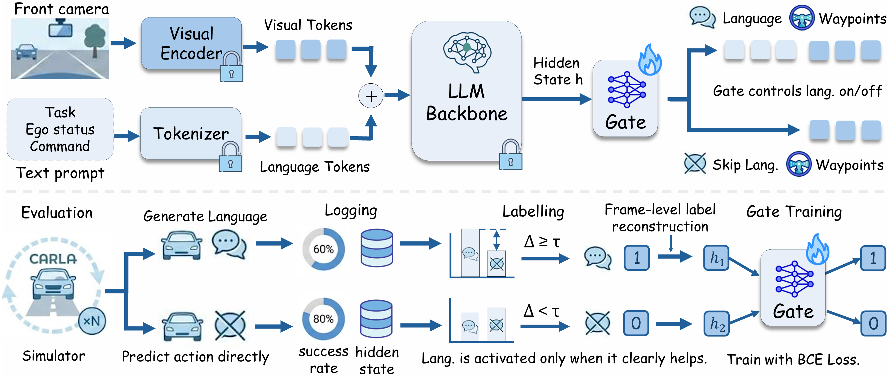
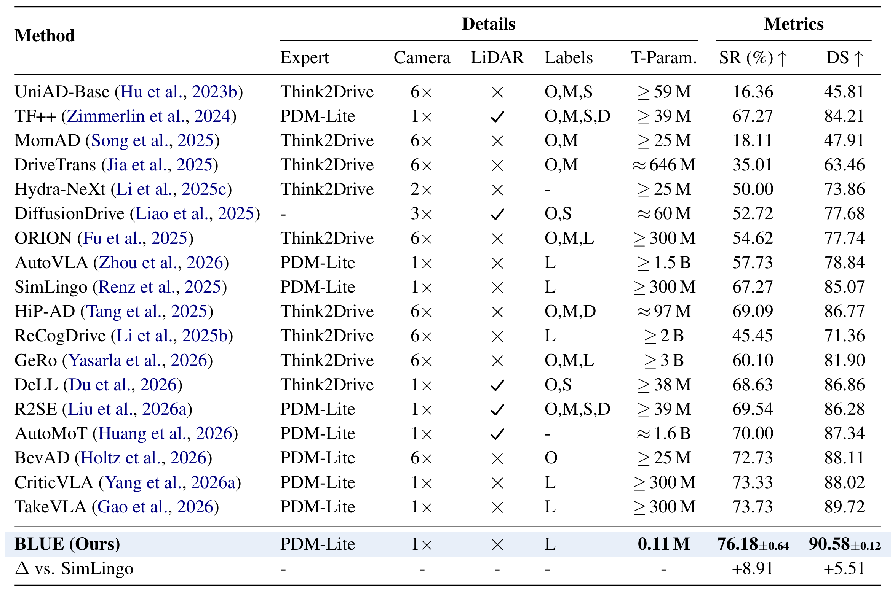
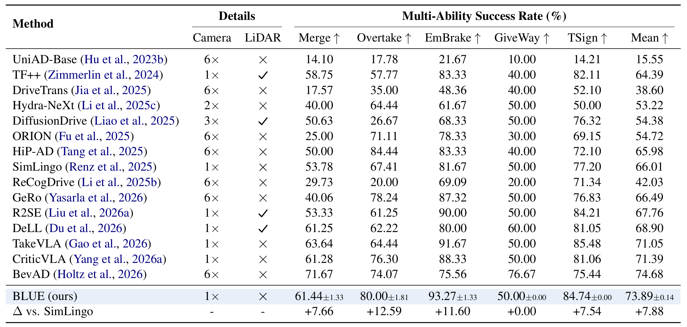
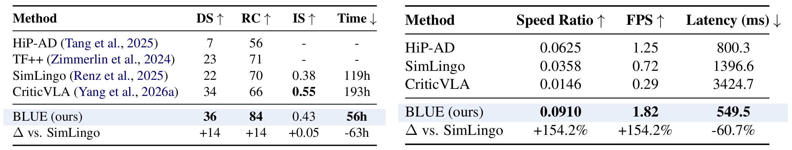

Code, data, logs, and checkpoints will be fully released.
Example closed-loop runs in CARLA: BLUE demonstrations and comparisons against the SimLingo backbone.
Representative closed-loop runs completed by BLUE.
BLUE improves driving success rate while reducing inference latency.
We present BLUE, a minimal method for better language use in vision-language-action (VLA) models for autonomous driving (AD). Through extensive analysis, we reveal that language matters on only a small fraction of routes, but on those routes it can greatly improve or degrade performance. Generating language at every frame is therefore inefficient, since most computation is spent on frames that do not benefit from language. We further show that pretrained VLA hidden states potentially already encode whether language will benefit a given frame, even though scene complexity and kinematic features alone struggle to predict this. Based on this finding, BLUE trains a lightweight gate on frozen VLA hidden states to decide per frame whether to activate language generation or predict actions directly, without modifying the backbone or requiring additional human annotation. With just a 0.11M-parameter gate, BLUE sets a new state of the art on both benchmarks, achieving 76.2% success rate on Bench2Drive and 36 driving score on Longest6 v2, while delivering 2.54× inference speedup and 8.9% success rate improvement over the backbone. BLUE provides a practical path toward efficient language-augmented AD, showing that VLA models can retain the benefits of language at a fraction of the cost.

Overview of BLUE. A lightweight gate receives the hidden state from the frozen VLA backbone and decides per frame whether to activate language generation or directly output waypoints. Labels are derived from routine driving evaluation, while the visual encoder and LLM backbone remain frozen and only a lightweight MLP gate is trainable.

BLUE achieves the highest closed-loop success rate (SR) and driving score (DS), with large margins over its SimLingo backbone. T-Param. reports trainable parameters; BLUE trains only a 0.11M gate while keeping the VLA backbone frozen. Notably, BLUE surpasses methods that employ multi-camera setups, LiDAR, or dense auxiliary labels, using only a front-view camera with language annotations.

Mean denotes the average success rate over the five driving skills. While using only a single front-view camera and no LiDAR, BLUE achieves the second-best mean result and remains close to the best method, which uses six cameras.

Left: closed-loop results on Longest6 v2. DS: driving score, RC: route completion, IS: infraction score. Time: total A100 GPU hours to evaluate all routes. Right: inference efficiency comparison among representative driving models. Higher speed ratio and FPS are better, while lower latency is better.